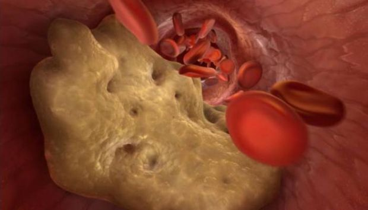

МЕДИЦИНА• ИНСТРУКЦИЯ
Японский врач расскажет вам о рисках высокого кровяного давления в пожилом возрасте
Что идеально подходит для растворения холестериновых бляшек и улучшения кровообращения?
Миллионы людей лечат тысячи различных заболеваний кучами разных лекарств, даже не понимая, что корень зла не там, где болит. Холестерин незаметен, он накапливается тихо, медленно и незаметно, удушая все жизненно важные органы.
При накоплении холестерина в организме лавинообразно увеличивается риск развития заболеваний, связанных со стенозом или закупоркой кровеносных сосудов.
Какую опасность представляют собой холестериновые бляшки?
Накопление холестерина в стенках кровеносных сосудов активно начинается после 40 лет, а после 50 - с поразительной скоростью. Возникающие в результате «холестериновые» барьеры ухудшают кровоток. Постепенно образуется атеросклеротическая бляшка, и диаметр сосуда становится все меньше и меньше. Это значительно увеличивает риск закупорки сосудов тромбом. Когда это происходит, кровь частично или полностью перестает поступать к тому или иному органу, что приводит к серьезным нарушениям его функционирования или смерти человека.

Опасность также заключается в скрытом - бессимптомном течении болезни. Состояние сосудов постоянно ухудшается, и нарушения проявятся только тогда, когда сосуды уже уменьшены вдвое. Точно сказать, как проявится атеросклероз, невозможно; все зависит от того, какой орган был обделен необходимым питанием. Чаще всего атеросклероз поражает сосуды сердца, кишечника, головного мозга, аорты, почек, нижних конечностей и поджелудочной железы.
Накопление холестерина (атеросклероз) губительно влияет на все органы и системы организма. Вопрос только в том, какой орган будет «слабым звеном» и не выживет первым.
7 целей холестерина
Атеросклероз аорты
При атеросклерозе аорты речь идет о поражении самой крупной артерии в организме. Аорта напоминает ствол, от которого отходят другие более мелкие сосуды.
Аорта включает 2 отдела:
- Грудной
- Брюшной
Грудной отдел снабжает кровью органы, расположенные в груди, а также голову и шею.
Брюшная аорта направляет кровь к органам, расположенным в брюшной полости и нижних конечностях.


Заболевание развивается в 2 стадии:
- В начальной стадии отсутствуют внешние проявления болезни. Но уже имеющиеся осложнения можно обнаружить с помощью лабораторных исследований.
- Клинический период сопровождается ярко выраженными признаками заболевания.
Атеросклероз грудного отдела аорты
В начальной стадии патология не сопровождается какими-либо симптомами. Первыми симптомами обычно являются боли в груди, которые носят периодический характер. Боль может уменьшаться, нарастать и не проходить в течение нескольких дней. Часто сопровождается чувством одышки.
Другие симптомы включают повышение артериального давления и развитие гипертонии.
При значительном повреждении дуги аорты возникают трудности с глотанием, голос становится хриплым. Атеросклеротические поражения грудной аорты могут сопровождаться ростом волос на ушах. На лице появляется жировик, происходит преждевременное поседение.

Другие симптомы повреждения грудного отдела аорты:
- боли, отдающиеся в руку, шейный и поясничный отделы;
- Повышенное артериальное давление;
- постукивания между ребрами с правой стороны груди;
- шум в голове;
- головокружение;
- боль в шее при попытке повернуть голову.
На фоне недостаточного кровоснабжения сердца развиваются следующие патологии:
- аритмия;
- сердечная недостаточность;
- стенокардия;
- сердечный приступ.
Поражение грудной аорты часто сочетается с атеросклеротическим поражением коронарной артерии и повреждением сосудов головного мозга.
Атеросклероз брюшной аорты

Атеросклеротическое поражение брюшной аорты сопровождается нарушением работы пищеварительной системы и проявляется следующими симптомами:
- Боль в животе. Они носят приступообразный характер. Часто пациент не может точно указать, где находится очаг боли;
- Нарушения стула;
- Метеоризм;
- Изжога;
- Отрыжка и привкус горечи;
- Тромбоз висцеральных артерий. Опасное осложнение, которое может привести к летальному исходу. Сопровождается некротизацией петель кишечника и обширным воспалением. Состояние сопровождается очень сильной болью, которую невозможно устранить с помощью обезболивающих.
В результате образования бляшек в этой области происходит нарушение кровоснабжения органов малого таза. В качестве осложнений, возникающих впоследствии, могут наблюдаться почечная недостаточность, заболевания висцеральных артерий.
Сосуды головного мозга
Холестерин, который приводит к церебральному атеросклерозу, разрушает как интракраниальные, так и экстракраниальные сосуды. Интенсивность патологических симптомов напрямую связана со степенью и расположением возникших поражений.
Помимо наиболее опасного осложнения-инсульта, можно наблюдать торможение деятельности центральной нервной системы, развитие психических расстройств, ухудшение зрения и памяти.

Первые признаки поражения появляются уже в зрелом возрасте - 40-45 лет.
На этом этапе возможно проявление «ишемических приступов", сопровождающиеся нарушением чувствительности, нарушениями координации, патологиями зрения, слуха и речи. Несмотря на тяжесть симптомов, в этот период они недолговечны, обратимы и исчезают сами по себе после однократной очистки сосудов нутрицевтиками.
Тяжелые атеросклеротические поражения могут привести к инсульту, то есть некрозу тканей головного мозга. Симптомы такие же, как и в предыдущем случае, но после некроза значительного улучшения не наблюдается.
Мозг также отвечает за выполнение высших психических функций. Поэтому образование бляшек также приводит к ухудшению интеллекта и памяти, изменению характера (лабильность настроения, капризы, лень). При отсутствии терапевтических мер по освобождению сосудов от бляшек такое поражение приводит к развитию деменции, болезни Альцгеймера. Такие осложнения опасны и могут привести к инвалидности или смерти.
Различают 2 типа инсульта:
- ишемический;
- геморрагический.
Инсульт уже достиг возрастного предела. Это больше не ассоциируется со старостью. Ишемия возникает из-за закупорки сосудистого русла тромбом, причиной кровотечения является разрыв сосудов головного мозга.
Сердце
Одной из причин смерти пациентов с сердечно-сосудистыми заболеваниями на фоне накопления холестерина в сосудах является закупорка основной коронарной артерии.
С этим поражением связаны такие заболевания, как ишемическая болезнь сердца, стенокардия и инфаркт миокарда.
Ишемическая болезнь сердца - это тяжелая патология сердца, которая представляет собой целый комплекс расстройств. Включает стенокардию, инфаркт миокарда, кардиосклероз.

Чаще всего ишемическая болезнь сердца проявляется стенокардией. На ранней стадии его проявления в виде боли в груди возникают только во время физических нагрузок. Это логично, так как в покое для работы сердца требуется меньше кислорода, а при интенсивной деятельности эти потребности возрастают. Подобная реакция может быть на стресс, эмоциональный дистресс. По мере развития атеросклероза и увеличения перекрытия по диаметру сосудистого русла ишемическая болезнь становится все более выраженной. На более поздних стадиях болезни любое движение пациента уже вызывает боль.
Классические признаки стенокардии включают в себя:
- появление боли как под воздействием стресса, так и в покое;
- боль ощущается за грудиной, может переходить в плечо (слева), лопатку, руку. Кроме того, интенсивность
- боли напрямую связана с тяжестью приступа;
- острая, давящая боль;
- купировать приступ можно, приняв таблетку нитроглицерина;
- продолжительность приступа снизится: не более 5 минут.
Различия между сердечным приступом и стенокардией
- боль очень высокой интенсивности;
- продолжительность атаки составляет не менее 20 минут;
- нитроглицерин не помогает при инфаркте миокарда;
- болезненные ощущения рассеянны.
Бляшка, вызванная высоким уровнем холестерина, может привести к внезапной смерти пациента. Эта ситуация развивается, когда из-за сбоя кровоснабжения сначала меняется частота сердечных сокращений, а затем сердце останавливается.
Все сосудистые заболевания сердца являются серьезными и опасными. без полного функционирования сердца другие органы не могут нормально функционировать. Атеросклероз сосудов сердца также может привести к инфаркту миокарда. Сердечный приступ вызван разрывом бляшки и закупоркой сосуда сгустком крови. В результате кровь перестает подаваться в определенную область сердечной мышцы и затем она умирает.
После развития нарушения сократимости сердечной мышцы смерть наступает в течение нескольких часов или дней. Однако даже если человека спасли, у него все равно наблюдается сбой кровоснабжения, который, без очищения кровеносных сосудов от холестерина, рано или поздно приведет ко второму приступу. Поэтому очистка кровеносных сосудов нутрицевтиками жизненно важна для пациентов, перенесших инфаркт.
Кроме того, на фоне нарушений кровообращения развивается гипертония. Это сопровождается нарушением функций сердца, патологическими процессами в работе центральной нервной системы, почек.
Гипертония возникает также на фоне поражений головного мозга, почек, периферических сосудов. При патологии головного мозга она проявляется нарушением сознания, потерей зрения и нарушением функции почек, что приводит к почечной недостаточности.
Сосуды нижних конечностей
Комплекс симптомов поражений нижних конечностей, которые приводят к отложениям холестерина, включает в себя:
- восприимчивость нижних конечностей к холоду;
- судороги;
- хромота;
- трофические язвы, сосудистая "сетка" и "звездочки", возникающие после поражений кожи;
- варикозное расширение вен;
- боли, которые могут возникать как в состоянии активности, так и в состоянии покоя (могут различаться по интенсивности);
- разрушение хрящевой ткани, развитие артроза.
Помимо болевых ощущений бывают нарушения опорно-двигательного аппарата. Проявления возникают по аналогии с нарушениями работы сердца: на начальном этапе боли появляются только при больших физических нагрузках, длительных прогулках. На последней стадии боли становятся невыносимыми даже в состояние покоя.
Периодическая хромота - главный симптом при появлении сосудистых поражений. Болезненные ощущения в основном локализуются в мышцах бедра и икр.
Недостаточное кровоснабжение нижних конечностей, вызывает бледность и онемение кожи, волосы на ногах начинают выпадать. Образовавшиеся язвы лечить крайне сложно, это связано с тем, что регенеративные процессы не полностью активируются из-за отсутствия кровоснабжения. В результате таких изменений рано или поздно начинается гангрена: ткани погибают. Прием лекарств на этом этапе не дает результатов. Гангрену можно вылечить только ампутацией.
Лечение включает в себя, помимо приема нутрицевтиков, предназначенных для борьбы с атеросклерозом, физиотерапию и спа-процедуры.
Почечные артерии
При атеросклеротическом поражении сосудов, снабжающих почку питанием, развивается вторичная артериозия. Характерными проявлениями являются отеки, которые образуются в результате задержки натрия в организме, наиболее тяжелая ситуация - развитие отека легких. Одно из последствий - инфаркт почки. При поражении почки симптомы заболевания не выражены.

Закупорка почечной артерии холестерином приводит к формированию острой почечной недостаточности.
Это основные проявления атеросклероза почечных артерий:
- гипертония;
- отек;
- локализованная боль в спине;
- слабость, упадок сил.
Как избавиться от атеросклеротических бляшек?
Лечение основано на систематической очистке кровеносных сосудов. Не реже одного раза в 5 лет, начиная от 40 лет для мужчин и от 45 для женщин.
До недавнего времени было невозможно избавиться от уже существующих атеросклеротических бляшек; терапия была основана на замедлении образования новых бляшек.
Но все изменилось с открытием нутрицевтиков.
Современные средства борьбы с холестериновыми бляшками (нутрицевтиками) позволяют очищать кровеносные сосуды в домашних условиях без присмотра специалистов. Главное-точно соблюдать продолжительность лечебного курса. Эффективная продолжительность приема-1,5 месяца.
В течение 1,5 месяцев нутрицевтики удаляют из сосудов, артерий и капилляров от 89% до 97% отложений холестерина. (Около 3,7 кг)
Что такое капли «Кардиофорт»?
Кардиофорт капли - новейший класс препаратов для лечения и профилактики атеросклероза сосудов.
Капли Кардиофорт сочетают в себе безопасность и высокую эффективность в борьбе с отложениями холестерина.
Капли Кардиофорт разрешены для самостоятельного приема для лечения атеросклероза и его последствий.
Натуральные капли Кардиофорт из всех нутрицевтиков полностью устраняют побочные эффекты и осложнения, поэтому рекомендуются пожилым людям и людям с хроническими заболеваниями.
Как нутрицевтики действуют на организм?
Капли Кардиофорт действуют в 3 этапа:
- 1. Устранение отложений холестерина. Растворяют атеросклеротические бляшки, тромбы и кальциевую известь. Увеличивают просвет сосудов и восстанавливают кровообращение.
- 2. Устраняют последствия недостаточного кровообращения. Полностью или значительно излечиваются такие заболевания, как гипертония, головные боли, варикозное расширение вен, диабет 2 типа, тромбоз и геморрой. Шум в ушах, головокружение исчезают, улучшается острота зрения и ясность мышления.
- 3. Они улучшают прочность и эластичность стенок сосудов. Это предотвращает образование новых бляшек и снижает риск инсульта в 11 раз
«Cardiofort»

Капли "Cardiofort" сегодня - это современныйнутрицевтик 5-го поколения с уникальным эффектом, который растворяет до 97% отложений холестерина и удваивает просвет сосудов, восстанавливая кровообращение.
Действие основано на способности активных молекул вещества проникать в атеросклеротические бляшки через фиброзное покрытие. Этот эффект обеспечивает растворение отложений холестерина, что было невозможно до недавнего времени.
Прием капель «Кардиофорт» в течение 2 месяцев 2 раза в день натощак дает следующие результаты:
- Устраняет до 97% атеросклеротических бляшек.
- Укрепляет стенки сосудов.
- Нормализует артериальное давление.
- Стабилизирует уровень сахара в крови.
- Восстанавливает функциональную активность головного мозга и нервной системы.
- Останавливает процессы старения сердечной мышцы.
- Снижает риск развития инфаркта миокарда.
- Повышает антиоксидантный барьер.
- Улучшает коронарное и мозговое кровообращение.
- Нормализует обмен минералов в сердечной мышце.
Посмотрите сами
Капли «Кардиофорт»
Пациент
женщина, 67 лет. В начале терапии наблюдались обширные поражения грудной и брюшной аорты с отложениями холестерина. Нарушения кровообращения органов брюшной полости, легких и бронхов.
женщина, 67 лет. В начале терапии наблюдались обширные поражения грудной и брюшной аорты с отложениями холестерина. Нарушения кровообращения органов брюшной полости, легких и бронхов.
Сопутствующие осложнения:
Гипертоническая болезнь III степени, отек нижних конечностей, варикозное расширение вен, аритмия, преддиабетическое состояние.
Гипертоническая болезнь III степени, отек нижних конечностей, варикозное расширение вен, аритмия, преддиабетическое состояние.
Жалобы пациента:
головные боли, головокружение, шум в ушах, боли и судороги в ногах, проблемы со сном, давление вплоть до гипертонического криза.
головные боли, головокружение, шум в ушах, боли и судороги в ногах, проблемы со сном, давление вплоть до гипертонического криза.
Рецепт:
Капли «Кардиофорт», 2 раза в день натощак. Контрольный визит через 30 дней и 60 дней.
Капли «Кардиофорт», 2 раза в день натощак. Контрольный визит через 30 дней и 60 дней.
Общая ангиограмма сосудов пациента
Результаты лечения
По результатам 2-х месячной терапии с капли «Кардиофорт», Были получены следующие результаты
- Артериальное давление вернулось к норме 130-139 \ 85-89. Что и является крайним пределом нормы
- Отеков не наблюдается.
- Уровень сахара не превышает 5,5 ммоль / л.
- Никаких проявлений варикозного расширения вен не наблюдается.
- Аритмия не отслеживается, пульс 73 уд / мин.
- Головные боли и шум в ушах не беспокоят после первой недели приема лекарства.
- Нормализованный сон.
- Повышение остроты зрения.
- Общий тонус и самочувствие значительно улучшились
Кровообращение мозга восстановлено
Пациент
мужчина, 51 год. В начале терапии наблюдалась значительная обструкция мозгового кровообращения.
мужчина, 51 год. В начале терапии наблюдалась значительная обструкция мозгового кровообращения.
Связанные осложнения:
Повышенное артериальное давление, помутнение роговицы, остеохондроз шейной и грудной областей, хронический простатит, острый геморрой, гипергликемия.
Повышенное артериальное давление, помутнение роговицы, остеохондроз шейной и грудной областей, хронический простатит, острый геморрой, гипергликемия.
Жалоба пациента: головные
боли, помутнение зрения, рябь в зрении. Общая слабость и апатия, нежелание что-то делать. Низкая эффективность, неспособность сосредоточиться в течение длительного времени, отсутствие энергии.
боли, помутнение зрения, рябь в зрении. Общая слабость и апатия, нежелание что-то делать. Низкая эффективность, неспособность сосредоточиться в течение длительного времени, отсутствие энергии.
Рецепт:
Капли «Кардиофорт», 2 раза в день натощак. Контрольный визит через 30 дней и 60 дней
Капли «Кардиофорт», 2 раза в день натощак. Контрольный визит через 30 дней и 60 дней

Результаты лечения
1,5-месячное лечение каплями «Кардиофорт» дала следующие результаты:
- Артериальное давление полностью в норме.
- Стабилизированный уровень сахара.
- Исчезли головные боли.
- Повышенная эффективность и активность.
- Энергия значительно повысилась.
- Геморрой исчез.
- Исчезли боли в спине, шее и суставах.
- Повышение остроты зрения.
- Симптомы простатита не проявляются.
Существенный недостаток «Кардиофорта»
Единственный и, по сути, главный недостаток «Кардиофорт» нутрицевтика - это его цена.
Это логично, потому что нутрицевтики являются последними препаратами с высокими производственными затратами. Натуральный состав очень требователен к условиям хранения и обработки, что значительно увеличивает себестоимость производства.
В большинстве сетевых аптек «Кардиофорт» не поставляется просто из-за дороговизны. И врачи не рискуют прописывать такой дорогой препарат.
Раз в год производитель «Кардиофорт» вместе с Международной комиссией по холестерину организовывают Бонусный день . Все люди, которым необходимо очистить кровеносные сосуды, снизить уровень сахара и артериальное давление, могут получить «Кардиофорт» со скидкой.
Запомните эту дату:
– Это международный день борьбы с холестерином.
В этот день вы можете заказать капли «Кардиофорт» со скидкой, но для этого необходимо выполнить несколько условий.
Условия предоставления 50% СКИДКИ на «Кардиофорт»:
- Только для персональго пользования
Это необходимо, чтобы не иметь дело не с торговыми посредниками, которые пытаются покупать ПРОДУКТ оптом и перепродавать его по своим соображениям. - Подайте заявку через официальный сайт.
Покупка через официальный сайт - гарантия качества и защита от реселлеров.
Поэтому не откладывайте, заказывайте «Кардиофорт» прямо сейчас. Потому что на следующий день вы не сможете приобрести товар со скидкой.
ОТЗЫВЫ